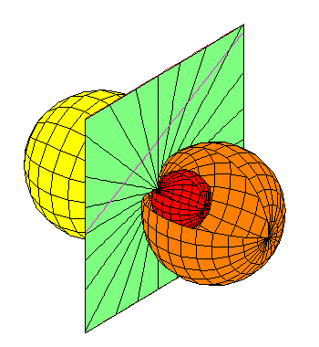
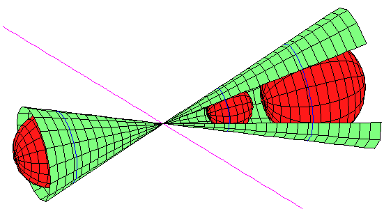
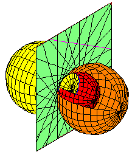
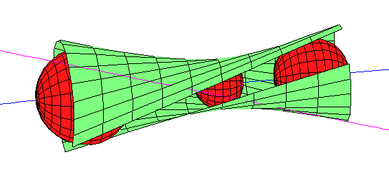
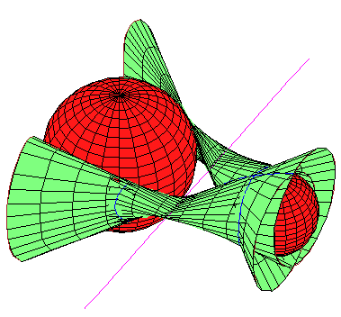
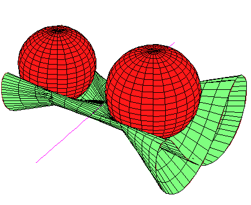
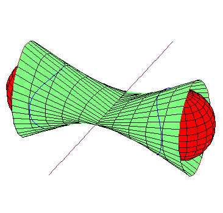
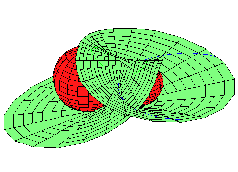
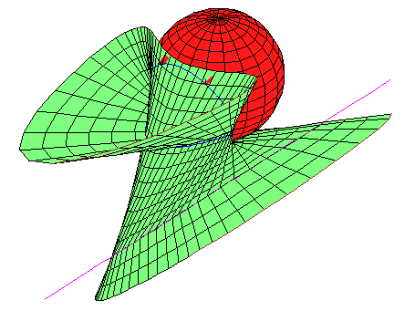

Envelope of lines meeting a fixed line and tangent to 2 spheres
Gabor Megyesi
Frank Sottile
30 January 2003
|
In the paper The Envelope of
Lines Meeting a Fixed Line and Tangent to Two Spheres, we study
the set of lines meeting a fixed line that are also tangent to two spheres.
Our goal is to completely classify possible configurations of one lines and
three spheres that have infinitely lines meeting the fixed line that are also
tangent to the spheres.
Theorem 1.
Let l be a line and
S1, S2, S3 be three
spheres in R3.
Then there are infinitely many lines that meet l and are
tangent to each sphere in precisely the following cases:
| (i) |
The spheres are tangent to each other at the same point
and either l meets that point,
or it lies in the common tangent plane, or both.
The common tangent lines are the lines in the tangent plane
meeting the point of tangency.
|
| (ii) |
The spheres are tangent to a cone whose apex lies on l.
The common tangent lines are the ruling of the cone.
|
| (iii) |
The spheres meet in a common circle and the line
l lies in the plane of that circle.
The common tangents are the lines in that plane tangent to the
circle.
|
| (iv) |
The centres of the spheres lie on a line m
and l is tangent to all three spheres.
The common tangent lines are one ruling on the hyperboloid of
revolution obtained by rotating l about m.
|
We illustrate the configurations of the Theorem.
In (i), the three spheres are mutually tangent at the some point, so that the set
of lines in the common tangent plane through the
point are tangent to all three spheres.
Then the line either passes through the common
tangent plane (on the left) or it lies in the
common tangent plane (on the right), or
both.

In (ii), there is a cone that is tangent to the
three spheres, and the line meets the apex of the
cone.

The last two cases are illustrated below.
In (iii) (on the left) the three spheres meet in a circle, and the line lies in
the plane of that
circle.
In (iv) (on the right), the line is tangent to the
three spheres, and their centres lie on a common
axis. The common tangents
form the hyperboloid of revolution obtained by
rotating the line about the
axis.


In general, the set of lines that meet a fixed line
and are tangent to two spheres determines the spheres.
This set is an algebraic curve of lines (of degree 8), and the union of the
lines is a ruled surface (of degree 8) tangent to
the spheres.
We call this ruled surface the envelope.
When line and spheres are in
general position, this is irreducible and it determines the
spheres.
Here are two pictures illustrating the envelope.


When the spheres and line
are in special position, the envelope becomes
reducible.
Besides the cases illustrated in Theorem 1 above, the most
interesting cases is when there is a component of
degree 4.
If this occurs, then there are two possible geometries:
Either the spheres are symmetric about the
line (on the left below), or they are both tangent
to the line at the same point (on the right below).
Neither configuration admits a third spheres tangent to all the lines.


The hardest part of the proof that limits a quartic
envelope to the two cases above
is when there is a rules quartic surface of lines that meet a fixed
line and are tangent to a
sphere, and the points of
tangency form a conic on the
sphere.
In this case, there cannot be a second sphere.
Here is a picture.

This material is based upon work supported by the National Science Foundation
under Grant No. 0134860.
Last modified on 30 January 2003 by Frank Sottile